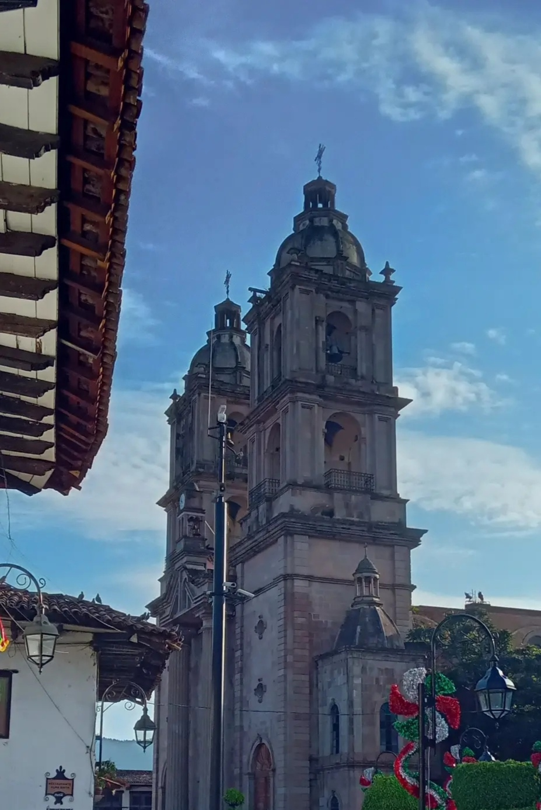

*Es el principal templo católico y un símbolo histórico en el corazón de Valle de Bravo.
* Ubicación: Plaza Independencia No. 1, Col. Centro, C.P. 51200, Valle de Bravo, Estado de México (frente al jardín central).
* Horarios generales:
• Lunes a sábado: 08:00 – 19:00 hrs
• Domingo: 08:00 – 20:00 hrs
* Horarios de misa (referencia):
• Lunes a sábado: 08:00 AM y 07:00 PM
• Domingos: 08:00 AM, 09:30 AM, 01:00 PM, 07:30 PM y 08:00 PM

El Kiosco de Valle de Bravo se encuentra en el jardín central del pueblo mágico, ubicado en la Calle Francisco González Bocanegra, en el Centro, Estado de México.
¿Qué encontrarás en el Kiosco y su plaza?
* El corazón del pueblo: Es el punto de reunión principal, rodeado de árboles, bancas de descanso y arquitectura tradicional de estilo colonial.
* Gastronomía local: Alrededor de la plaza hay puestos y neverías tradicionales para comer nieves artesanales, además de restaurantes y cafés.
* Artesanías y ambiente: Es común encontrar venta de artesanías locales, música y un ambiente familiar muy vivo, que se adorna de forma especial durante fiestas patrias u otras temporadas del año.
* Cerca de atractivos: Está muy cerca de la iglesia principal y a pocos minutos caminando hacia el embarcadero y la zona del lago.
El Mercado Municipal de Valle de Bravo es el epicentro gastronómico y comercial del pueblo, ideal para vivir la experiencia local y degustar comida típica a precios accesibles.
Lo que debes saber antes de ir
• La experiencia culinaria: Es famoso por sus puestos de comida donde podrás probar la barbacoa, cecina vallesana, quesadillas gigantes, cecina de yecapixtla y aguas frescas tradicionales.
• El ambiente: Es un mercado tradicional mexicano vibrante, colorido y a veces un poco caótico. Los fines de semana suele llenarse considerablemente debido al turismo.
• Consejo local: Si buscas comer bien y a buen precio, se recomienda optar por las opciones de comida corrida del día, ya que los platillos a la carta o los desayunos individuales en algunos locales turísticos pueden llegar a costar casi lo mismo que en un restaurante con terraza del centro.